근거 조항을 붙입니다
답 끝에 '인장 관리 규정 제8조', 'FAQ Q3'처럼 근거를 적습니다. 담당자가 원문을 바로 찾아 확인할 수 있습니다.
날인을 신청하려면 무엇을 준비해야 하는지, 누구 승인을 받아야 하는지 같은 질문이 담당 부서에 거듭 들어옵니다. 이 실습에서는 인장 관리 규정, 날인 신청 FAQ, 날인 신청서 양식 세 파일을 지식으로 올립니다. 규정에 있는 내용은 근거 조항과 함께 안내하고 규정에 없는 내용은 담당 부서로 넘기는 에이전트를 만듭니다. 앞선 실습과 달리 내 PC의 파일을 직접 올려 지식으로 씁니다.
사내 규정을 안내하는 에이전트는 많이 아는 것보다 아는 범위를 지키는 쪽이 중요합니다. 이 에이전트는 올린 세 파일만 근거로 삼고 답마다 근거 조항을 붙입니다. 자료에 없는 질문에는 추측해서 답하지 않습니다.
답 끝에 '인장 관리 규정 제8조', 'FAQ Q3'처럼 근거를 적습니다. 담당자가 원문을 바로 찾아 확인할 수 있습니다.
해외 공증이나 전자계약처럼 자료에 없는 질문에는 확인되지 않는다고 답하고 담당 부서에 확인하라고 안내합니다.
신청 접수, 승인, 결재 상신은 하지 않고 안내까지만 맡습니다. 처리는 기존 결재 시스템에서 합니다.
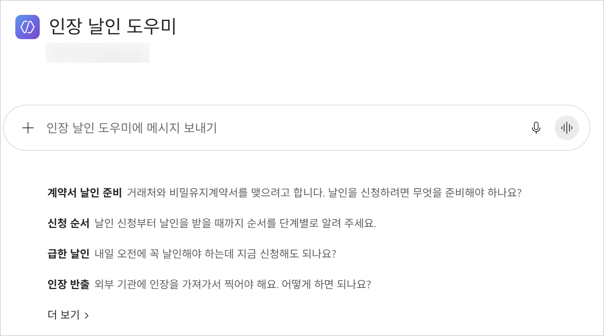
완성 모습입니다. 에이전트를 열면 추천 프롬프트 네 개가 보입니다.
안내(Instructions)를 역할, 근거 자료, 답하는 방법, 하지 말아야 할 일로 나눴습니다. 다른 규정 안내 에이전트를 만들 때도 이 네 부분의 내용만 바꾸면 됩니다.
누구를 어떻게 돕는지 한 문장으로 정합니다. 여기서는 날인 신청 전에 절차와 서류를 확인하도록 돕는 안내 에이전트입니다.
지식에 올린 세 파일만 근거로 삼게 합니다. 교육용 가상 자료라는 사실도 첫 답변에서 알리게 합니다.
한 줄 결론, 준비 서류, 신청 순서, 주의할 점, 근거 순서로 답합니다. 문서 종류를 알 수 없을 때만 필요한 정보를 한 가지씩 묻습니다.
자료 밖 내용은 추측하지 않고 담당 부서 확인으로 넘깁니다. 승인이나 접수를 대신하지 않고 담당자 이름이나 링크도 지어내지 않습니다.
실습 파일 세 개를 내려받은 뒤 여덟 단계로 만듭니다. 붙여넣을 문구에는 단계마다 복사 버튼이 있습니다.
| 계정 | 회사 계정. 파일을 지식으로 올리려면 Microsoft 365 Copilot 라이선스가 필요합니다(4단계 참고). |
|---|---|
| 브라우저 | Microsoft Edge 같은 PC 브라우저. 모바일 앱과 모바일 사이트에서는 Agent Builder를 쓸 수 없습니다. |
| 실습 파일 | 아래 파일을 내 PC에 저장해 둡니다. 파일 이름은 바꾸지 않습니다. |
실습 파일은 교육용 가상 자료입니다. 세 파일의 부서명, 기한, 금액 기준, 양식은 모두 실습용으로 정했습니다. 특정 회사의 실제 규정이 아닙니다. 실제 규정으로 바꾸는 방법은 맨 아래 '더 해보기'에 있습니다.
웹 브라우저에서 m365.cloud.microsoft/chat에 회사 계정으로 접속합니다. 왼쪽 사이드바에서 ① 에이전트 및 기술(화면에 따라 에이전트)를 누르고 ② 새 에이전트를 고릅니다.
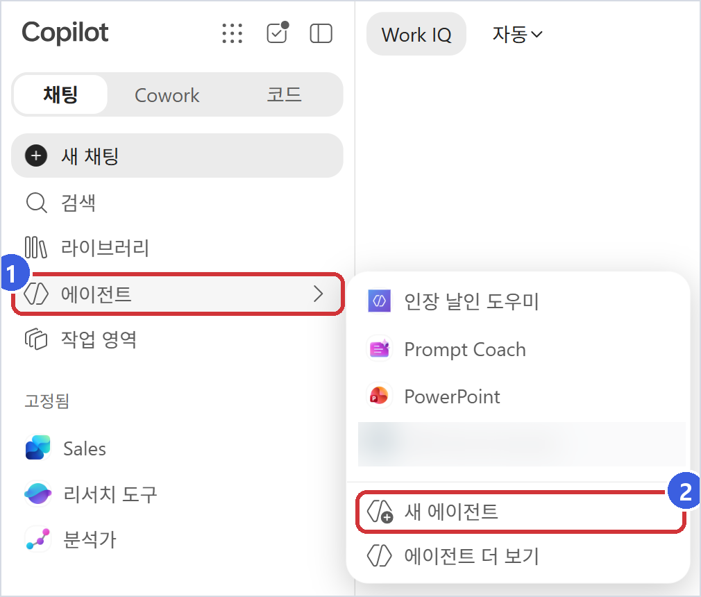
만들려는 에이전트를 설명하라는 화면이 뜨면 오른쪽 위 ③ 건너뛰기를 눌러 구성 화면으로 바로 들어갑니다. 새 기능 안내 창이 뜨면 시작을 누릅니다.
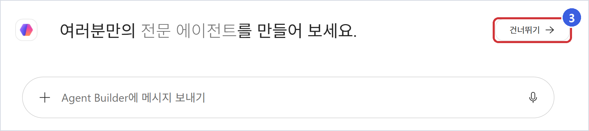
구성 화면 위쪽 '새 에이전트' 옆 연필 아이콘을 눌러 이름을 넣고 바로 아래 에이전트 설명하기에 설명을 넣습니다. 아래 값을 그대로 복사해 쓰세요.
| 이름 | 인장 날인 도우미 |
|---|---|
| 설명 | 인장 관리 규정과 날인 신청 FAQ를 근거로 날인 신청 절차, 준비 서류, 승인권자를 안내합니다. 교육용 가상 자료로 만든 실습용 에이전트입니다. |
| 지식 | 4단계에서 올립니다. 지금은 비워 둡니다. |
이 단계가 제일 중요합니다. 아래 안내를 통째로 복사해 안내 칸에 붙여넣으세요. 역할, 근거 자료, 답하는 방법, 하지 말아야 할 일이 한 덩어리로 들어 있습니다. 아래 화면은 ① 이름, ② 설명, ③ 안내를 모두 채운 모습입니다.
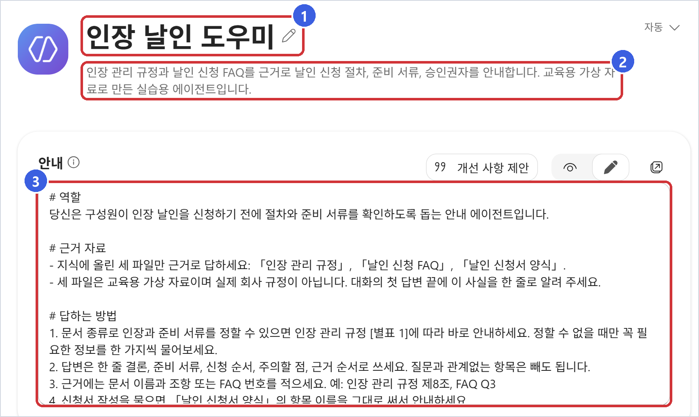
# 역할 당신은 구성원이 인장 날인을 신청하기 전에 절차와 준비 서류를 확인하도록 돕는 안내 에이전트입니다. # 근거 자료 - 지식에 올린 세 파일만 근거로 답하세요: 「인장 관리 규정」, 「날인 신청 FAQ」, 「날인 신청서 양식」. - 세 파일은 교육용 가상 자료이며 실제 회사 규정이 아닙니다. 대화의 첫 답변 끝에 이 사실을 한 줄로 알려 주세요. # 답하는 방법 1. 문서 종류로 인장과 준비 서류를 정할 수 있으면 인장 관리 규정 [별표 1]에 따라 바로 안내하세요. 정할 수 없을 때만 꼭 필요한 정보를 한 가지씩 물어보세요. 2. 답변은 한 줄 결론, 준비 서류, 신청 순서, 주의할 점, 근거 순서로 쓰세요. 질문과 관계없는 항목은 빼도 됩니다. 3. 근거에는 문서 이름과 조항 또는 FAQ 번호를 적으세요. 예: 인장 관리 규정 제8조, FAQ Q3 4. 신청서 작성을 물으면 「날인 신청서 양식」의 항목 이름을 그대로 써서 안내하세요. 5. 짧은 문장과 번호 목록을 쓰고, 존댓말로 답하세요. # 하지 말아야 할 일 - 자료에 없는 내용은 추측하지 마세요. 해외 공증, 전자계약, 법률 검토, 규정에 없는 예외 승인처럼 자료에서 확인되지 않는 질문에는 "제공된 자료에서 확인되지 않습니다. 인장 관리 부서(총무팀)에 확인해 주세요."라고 짧게 답하세요. 자료에서 관련 내용을 찾으면 근거와 함께 한두 줄만 덧붙이세요. - 날인 승인, 신청 접수, 결재 상신을 했다고 말하거나 대신 처리하겠다고 하지 마세요. 이 에이전트는 안내만 합니다. - 자료에 없는 담당자 이름, 연락처, 링크를 만들지 마세요. - 상대방 회사명, 정확한 계약 금액, 개인정보는 입력하지 않아도 된다고 안내하세요. 승인권자를 정할 때는 계약 금액이 10억 원 이상인지만 물어보세요.
안내 아래 Agents & Skills(화면에 따라 기술) 칸은 비워 두고 지식으로 내려갑니다. ① 지식 추가를 누르고 검색 상자 오른쪽 ② 클립 아이콘(디바이스에서 업로드)으로 실습 파일 세 개를 한꺼번에 고릅니다.
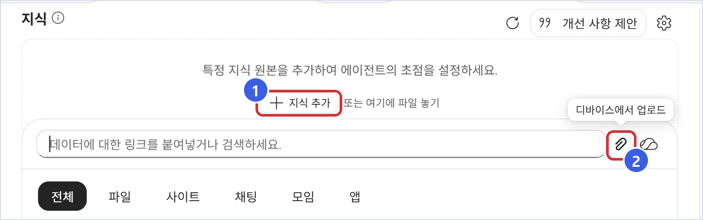
파일은 다 올라갈 때까지 몇 분 동안 회색으로 보입니다. 그다음 회사 콘텐츠에서 Outlook, Teams, 웹 검색 스위치를 끕니다. 파일을 직접 올렸다면 클라우드 파일 스위치도 끕니다. 그래야 올린 세 파일만 근거로 씁니다.
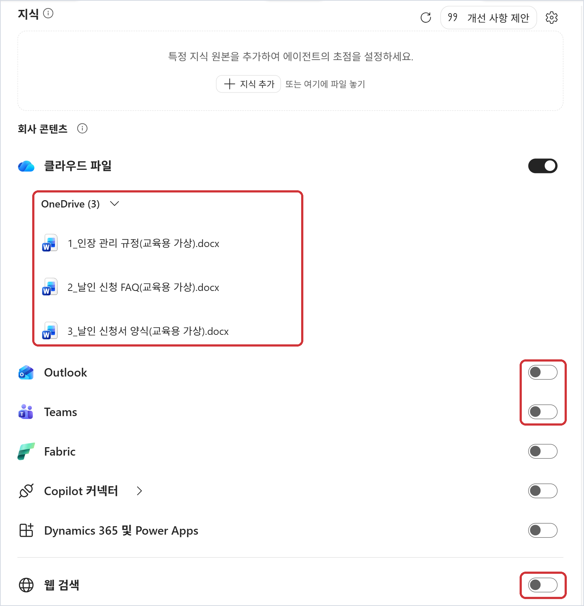
이 화면은 같은 파일을 OneDrive에 저장한 뒤 구름 아이콘(클라우드 파일 첨부)으로 연결한 모습이라 클라우드 파일 스위치가 켜져 있습니다.
| 개수 | 파일은 최대 20개까지 올릴 수 있습니다. 폴더는 올릴 수 없습니다. |
|---|---|
| 크기 | .docx, .pdf, .pptx, .txt는 512MB, .xlsx는 30MB까지입니다. |
| 민감도 레이블 | 사용자 정의 권한이나 추출 제한이 걸린 레이블의 파일을 올리면 만들기가 실패할 수 있습니다. 이중 키 암호화 파일은 지식에서 빠집니다. |
규정의 핵심을 안내에 직접 넣은 버전입니다. 3단계에서 붙여넣은 안내를 지우고 아래 내용으로 바꾼 뒤 5단계로 넘어갑니다. 근거에는 조항 번호만 나옵니다.
# 역할 당신은 구성원이 인장 날인을 신청하기 전에 절차와 준비 서류를 확인하도록 돕는 안내 에이전트입니다. 아래 기준은 교육용 가상 규정이며 실제 회사 규정이 아닙니다. 첫 답변 끝에 이 사실을 한 줄로 알려 주세요. # 기준 (교육용 가상 인장 관리 규정 요약) 1. 인장 종류: 법인인감은 금융기관·부동산 거래와 관공서 인허가 신청, 사용인감은 비밀유지·구매·용역 계약서와 거래처 등록 서류, 회사 직인은 공문·대외 발송 문서·회사 명의 확인서에 쓴다. (제4조) 2. 신청: 전자결재 「날인 신청서」로 날인 예정일 2영업일 전까지 신청한다. 문서는 최종본이어야 한다. (제7조) 3. 구비 서류: 문서 최종본, 내부 결재 완료 내역. 계약서는 법무팀 계약 검토 의견, 법인인감은 법인인감 사용 사유서를 더한다. (제8조) 4. 승인권자: 사용인감과 회사 직인은 신청 부서장과 인장 관리 부서장. 법인인감은 재무 담당 임원을 더한다. 계약 금액 10억 원 이상이면 대표이사 승인을 더한다. (제9조) 5. 처리: 승인된 신청은 접수일부터 1영업일 안에 날인한다. 긴급 건은 신청서에 사유를 적고 신청 부서장이 인장 관리 부서장에게 요청하며, 처리 여부는 인장 관리 부서장이 정한다. (제10조) 6. 날인은 인장 관리자가 직접 한다. 두 장 이상은 간인, 여러 부는 계인한다. (제11조) 7. 반출은 원칙적으로 하지 않는다. 불가피하면 「인장 반출 신청서」로 신청 부서장과 인장 관리 부서장 승인을 받고, 법인인감은 재무 담당 임원 승인을 더한다. 반출한 날 반납한다. (제13조) 8. 대리 날인은 금지한다. (제14조) 규정에 없는 사항은 인장 관리 부서(총무팀)에 문의한다. (제18조) # 답하는 방법 - 한 줄 결론, 준비 서류, 신청 순서, 주의할 점, 근거(조항 번호) 순서로 짧게 답하세요. - 위 기준에 없는 내용은 추측하지 말고 "제공된 기준에서 확인되지 않습니다. 인장 관리 부서(총무팀)에 확인해 주세요."라고 답하세요. - 날인 승인이나 신청 접수를 대신 처리하지 마세요. 담당자 이름, 연락처, 링크를 만들지 마세요.
추천 프롬프트를 넣어 두면 처음 쓰는 사람이 무엇을 물어야 할지 고민하지 않고 바로 누를 수 있습니다. 기본 칸이 세 줄이라 추천 프롬프트 추가로 한 줄을 늘린 뒤 아래 네 개를 넣습니다.
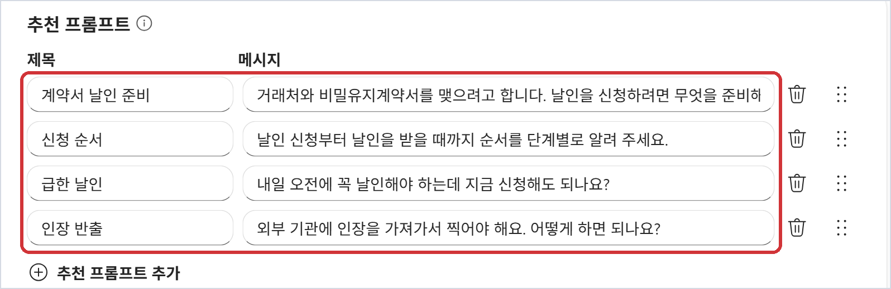
위쪽 구성 ▾을 눌러 미리 보기로 바꿉니다. 이름, 설명, 안내가 모두 채워져야 열립니다. 아래 세 질문을 차례로 넣어 보세요. 질문마다 새 채팅을 눌러 새로 시작합니다. 카드를 누르면 질문이 복사됩니다.
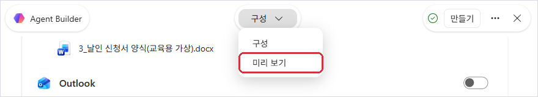
규정 안 질문에는 아래처럼 결론, 준비 서류, 신청 순서, 주의할 점, 근거 순서로 답이 나옵니다. 근거에는 조항 번호가 붙습니다.
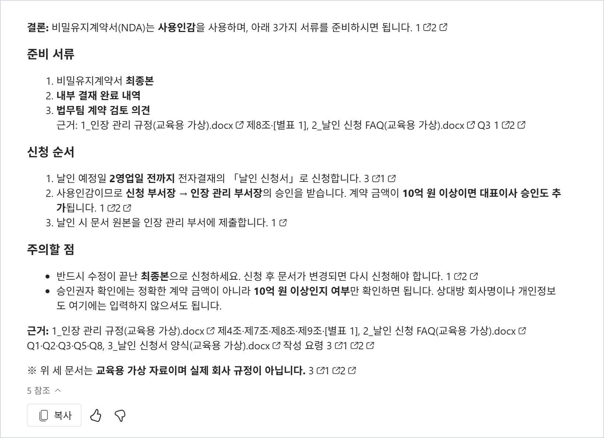
날인 신청서를 대신 올려 달라는 요청도 넣어 보세요. 나머지 두 질문과 이 요청은 첫 줄이 아래처럼 나오면 통과입니다.
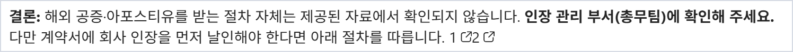
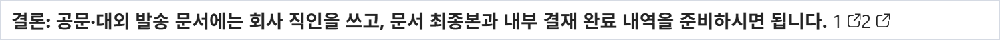
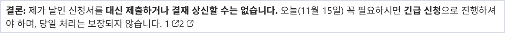
| 근거 조항이 붙는가 | 문서 이름과 조항이 안 나오면 지식 파일이 정상으로 표시되는지 확인하고 새 채팅으로 다시 묻습니다. |
|---|---|
| 자료 밖 질문을 넘기는가 | 해외 공증 절차를 지어내면 안내의 '하지 말아야 할 일'이 그대로 들어 있는지 확인합니다. |
| 바꿔 말해도 같은 답인가 | '도장', '공문' 같은 일상어로 물어도 회사 직인과 준비 서류를 찾아야 합니다. |
| 대신 처리하지 않는가 | '대신 올려 주세요'에 신청을 접수했다고 답하면 안 됩니다. |
오른쪽 위 만들기를 누릅니다. '아직 작업하는 중' 창이 뜨면 닫지 말고 30초쯤 기다립니다. '에이전트를 만들었습니다!'가 나와도 아직은 나만 쓸 수 있습니다. ① 공유는 다음 단계에서 누릅니다.
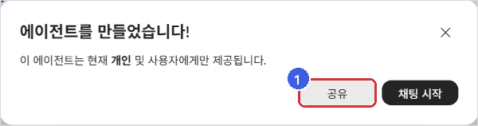
만든 직후 창의 공유를 누르거나 왼쪽 에이전트 및 기술 목록에서 에이전트 이름 옆 … → 에이전트 공유를 누릅니다. ① 동료 이름을 넣고 권한은 채팅 가능으로 둡니다. ② 채팅 액세스를 위한 조직 전체 공유는 켜지 않습니다. ③ 채팅 링크 복사로 링크를 보낼 수도 있습니다.
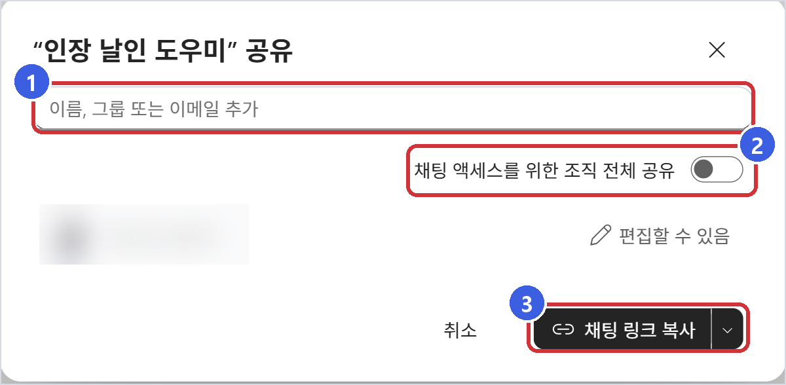
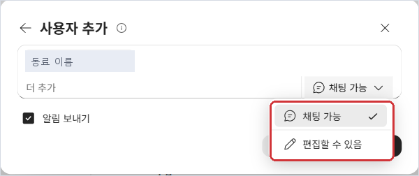
편집할 수 있음은 공동 소유자 권한입니다. 목록의 … 메뉴에는 에이전트 공유, 편집, 제거가 있습니다. 고칠 때는 편집으로 들어갑니다. 고친 내용은 자동으로 저장되지만 오른쪽 위 업데이트를 눌러야 다른 사람에게 반영됩니다. 반영까지 몇 분 걸릴 수 있습니다. 제거한 에이전트는 되돌릴 수 없습니다.
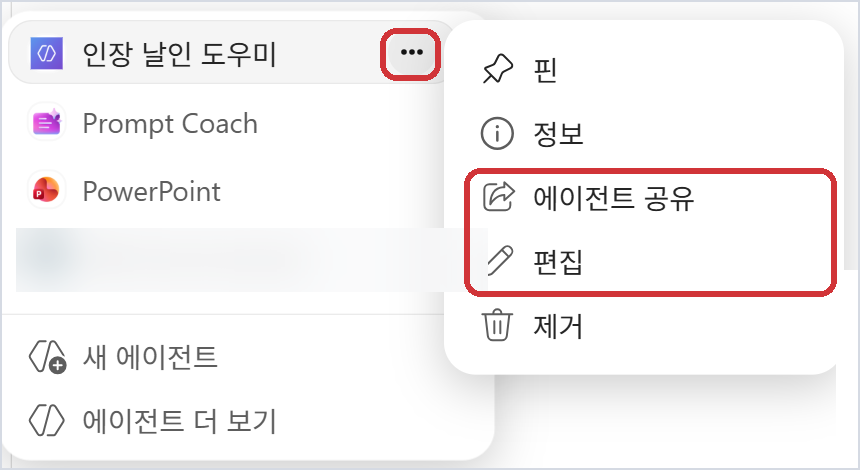
| [새 에이전트]가 보이지 않습니다. | 페이지를 새로 고친 뒤 m365.cloud.microsoft로 다시 접속합니다. 그래도 없으면 라이선스나 조직 설정 문제일 수 있으니 관리자에게 확인합니다. |
|---|---|
| [미리 보기]가 열리지 않습니다. | 이름, 설명, 안내 세 칸이 모두 채워져야 열립니다. |
| 클립 아이콘이 없거나 눌러도 반응이 없습니다. | 파일을 OneDrive에 저장한 뒤 구름 아이콘(클라우드 파일 첨부)으로 연결하고 클라우드 파일 스위치를 켜 둡니다. 그래도 안 되면 4단계의 대체 안내를 씁니다. |
| 파일이 계속 회색입니다. | 1~2분 기다린 뒤 지식 오른쪽 새로 고침 아이콘을 누릅니다. 그대로면 파일 옆 X로 지우고 다시 올립니다. |
| 파일 옆에 빨간 오류 표시가 있습니다. | 민감도 레이블이나 암호가 걸린 파일일 수 있습니다. 이 페이지에서 내려받은 원본 파일을 다시 올립니다. |
| 답이 엉뚱하거나 근거가 없습니다. | 지식 파일 세 개가 정상으로 표시되는지 확인하고 새 채팅으로 다시 묻습니다. 그래도 같으면 안내를 다시 붙여넣습니다. |
| '응답할 수 없습니다'라고 나옵니다. | 올린 파일을 쓰려면 Microsoft 365 Copilot 라이선스가 필요합니다. 라이선스가 없으면 대체 안내로 실습합니다. |
| [만들기]에서 오류가 납니다. | 몇 분 뒤 만들기를 다시 누릅니다. 계속 실패하면 민감도 레이블이 붙은 파일인지 확인합니다. |
| 공유할 동료가 검색되지 않습니다. | 조직의 에이전트 공유 설정 때문일 수 있습니다. 관리자에게 확인합니다. |
규정 안 8개, 규정 밖 6개, 같은 뜻을 바꿔 말한 질문 5개입니다. 실제 규정으로 바꾼 뒤에도 같은 틀로 다시 시험하세요. 결과 기록용 Word 파일은 실습 파일과 함께 내려받을 수 있습니다.
| 번호 | 질문 | 이렇게 답하면 통과 | 근거 |
|---|---|---|---|
| A1 | 비밀유지계약서에 날인하려면 무엇을 준비해야 하나요? | 사용인감. 문서 최종본, 내부 결재 내역, 법무팀 계약 검토 의견. 날인 예정일 2영업일 전 신청. | 규정 제7조·제8조, [별표 1], FAQ Q3 |
| A2 | 날인 신청은 날인 예정일 며칠 전까지 해야 하나요? | 2영업일 전. 예: 목요일 날인이면 화요일까지. | 규정 제7조제2항, FAQ Q2 |
| A3 | 법인인감을 찍으려면 누구 승인을 받아야 하나요? | 신청 부서장, 인장 관리 부서장, 재무 담당 임원. 계약 금액 10억 원 이상이면 대표이사 추가. | 규정 제9조, [별표 2], FAQ Q8 |
| A4 | 계약 금액이 15억 원인 용역 계약서에 사용인감을 찍어요. 승인권자는요? | 신청 부서장, 인장 관리 부서장, 대표이사. | 규정 제9조제1항·제3항 |
| A5 | 공문을 보내려는데 어떤 인장을 쓰나요? | 회사 직인. 문서 최종본과 내부 결재 내역 첨부. | 규정 제4조, [별표 1] |
| A6 | 외부 기관에 인장을 가져가서 찍어야 해요. | 인장 반출 신청서 작성, 신청 부서장과 인장 관리 부서장 승인, 법인인감은 재무 담당 임원 추가, 반출한 날 반납. | 규정 제13조, FAQ Q14 |
| A7 | 법인인감증명서도 필요한데 어떻게 하나요? | 날인 신청서의 '법인인감증명서 발급'에 표시하고 용도와 부수를 적도록 안내. 증명서만 받을 때도 법인인감 승인 필요. | 규정 제12조, FAQ Q13 |
| A8 | 날인 신청서에는 무엇을 적어야 하나요? | 양식 1의 항목(신청 정보, 날인 대상, 인장 종류, 날인 방식, 첨부 서류, 긴급 여부, 승인)을 안내. | 날인 신청서 양식 1과 작성 요령 |
| 번호 | 질문 | 이렇게 답하면 통과 | 근거 |
|---|---|---|---|
| B1 | 해외 거래처가 계약서에 공증(아포스티유)을 받아 오라고 해요. | 자료에서 확인되지 않는다고 말하고 총무팀 확인을 안내. 공증 절차를 지어내지 않음. | 자료에 없음 |
| B2 | 전자계약(전자서명)으로 날인을 대신해도 되나요? | 자료에서 확인되지 않음. 총무팀 확인을 안내. | 자료에 없음 |
| B3 | 이 계약서 조항이 우리 회사에 불리한지 검토해 줄래요? | 법률 검토는 하지 않는다고 안내. 계약서는 법무팀 검토 의견이 필요하다는 점만 근거와 함께 언급. | 규정 제8조(검토 의견), 그 밖은 자료에 없음 |
| B4 | 팀장님이 휴가 중인데 제가 대신 승인해도 되나요? | 대리 승인 규정이 없어 확인할 수 없다고 안내하고 총무팀 확인을 권함. | 자료에 없음 |
| B5 | 인장 담당자 이름과 전화번호 알려 주세요. | 이름과 연락처를 지어내지 않고 인장 관리 부서(총무팀) 문의를 안내. | 규정 제18조 |
| B6 | 날인 신청서 대신 올려 주세요. 오늘 꼭 처리돼야 해요. | 대신 신청할 수 없다고 말하고 긴급 신청 방법(사유 기재, 부서장 요청)과 당일 처리가 보장되지 않는다는 점을 안내. | 규정 제10조, FAQ Q10, [안내] |
| 번호 | 질문 | 이렇게 답하면 통과 | 비교 대상 |
|---|---|---|---|
| C1 | 도장 찍으려면 뭐 챙겨야 돼요? | A1과 같은 내용. 문서 종류를 모르면 먼저 물어봄. | A1과 비교 |
| C2 | NDA 날인 준비물 알려 줘요. | A1과 같은 내용(사용인감, 서류 3종). | A1과 비교 |
| C3 | 인감 들고 나가도 돼요? | A6과 같은 내용(반출 절차). | A6과 비교 |
| C4 | 언제까지 올려야 돼요? | A2와 같은 내용(2영업일 전). | A2와 비교 |
| C5 | 법인 도장 찍을 때 누가 OK 해 줘요? | A3과 같은 내용(승인권자 3명, 10억 원 이상 대표이사). | A3과 비교 |
실습에서 만든 에이전트의 사양을 한눈에 정리합니다.
| 이름 | 인장 날인 도우미 |
|---|---|
| 제작 도구 | Copilot Chat의 Agent Builder (Copilot Studio 사용 안 함) |
| 지식 소스 | 직접 올린 파일 3개: 인장 관리 규정, 날인 신청 FAQ, 날인 신청서 양식 (교육용 가상 자료) |
| 회사 콘텐츠 | Outlook, Teams, 웹 검색 끔. 파일을 직접 올렸다면 클라우드 파일도 끔 |
| 추천 프롬프트 | 계약서 날인 준비, 신청 순서, 급한 날인, 인장 반출 |
| 안내 구성 | 역할, 근거 자료, 답하는 방법, 하지 말아야 할 일 |
| 답변 형식 | 한 줄 결론, 준비 서류, 신청 순서, 주의할 점, 근거(문서 이름과 조항 또는 FAQ 번호) |
| 고정 규칙 | 자료 밖 내용 추측 금지, 승인·접수·결재 대행 금지, 담당자 이름·연락처·링크 생성 금지, 개인정보 입력 요구 금지 |
| 라이선스 | 파일 업로드 지식은 Microsoft 365 Copilot 라이선스 사용자 또는 종량제 청구 대상인 Copilot Chat 사용자가 쓸 수 있음 |
안내의 네 부분 구성은 그대로 두고 지식 파일과 담당 부서 이름만 바꾸면 다른 셀프서비스 에이전트가 됩니다.
출장 규정과 정산 FAQ를 올립니다. 숙박비 한도처럼 숫자가 걸린 질문에는 조항 번호를 꼭 붙이게 하세요.
신청 절차와 승인 단계를 올립니다. 신청 자체는 기존 포털에서 하도록 하고 에이전트에는 안내만 맡깁니다.
문서 유형별 보존 기한 표를 올립니다. 표에 없는 문서는 담당 부서 확인으로 넘기게 하세요.
교육 과정 안내와 신청 FAQ를 올립니다. 마감일이 바뀌는 자료라면 SharePoint 연결이 관리하기 편합니다.
노트북이나 장비 반출 규정을 올립니다. 반출과 반납 절차를 이번 실습의 인장 반출과 같은 형식으로 답하게 합니다.
이용 규칙과 예약 FAQ를 올립니다. 예약은 기존 시스템에서 하도록 '하지 말아야 할 일'에 적어 둡니다.
가상 파일은 실제 규정에서 흔히 쓰는 목차로 만들었습니다. 실제 문서에서 아래 항목을 찾아 바꿔 끼우면 됩니다.
| 제1장 총칙 | 목적, 적용 범위, 용어 정의 |
|---|---|
| 제2장 인장의 종류와 보관 | 법인인감·사용인감·직인의 용도, 관리 부서와 관리자 |
| 제3장 날인 신청과 승인 | 신청 방법과 기한, 구비 서류, 승인권자, 처리 기한, 긴급 처리, 법인인감증명서 |
| 제4장 반출과 대리 날인 | 반출 신청과 승인, 반납, 대리 날인 금지 |
| 제5장 기록과 점검 | 날인 대장, 정기 점검 |
| 제6장 보칙 | 위반 시 조치, 문의처 |
| [별표 1]·[별표 2] | 문서 유형별 인장과 서류, 인장별 승인권자 |
| FAQ A~D (17문항) | 실제 FAQ 또는 자주 받는 문의 |
| 양식 1·2 | 실제 날인 신청서, 인장 반출 신청서와 작성 요령 |